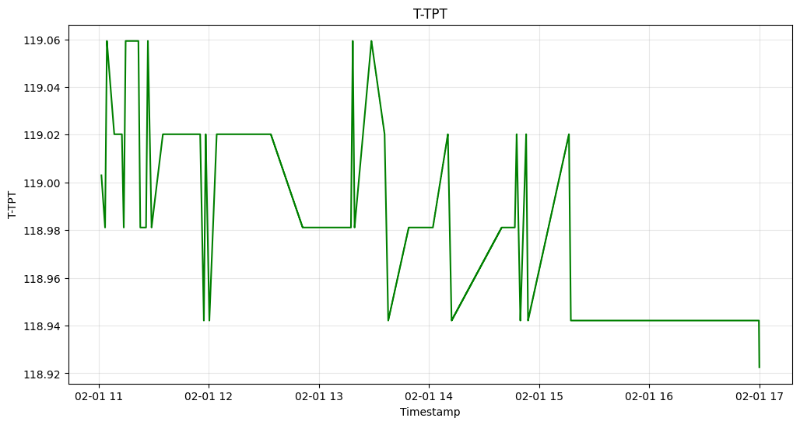
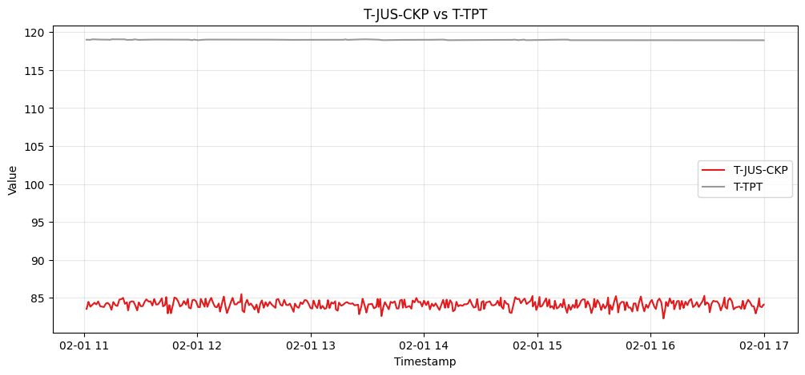
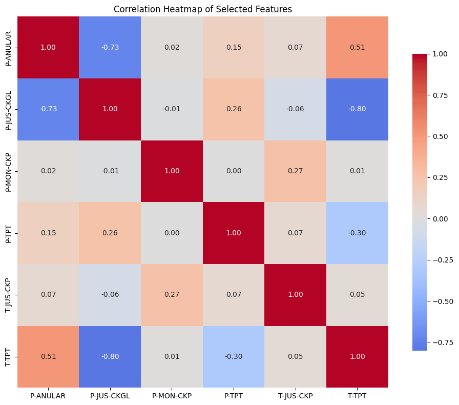
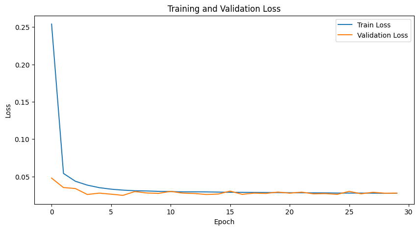
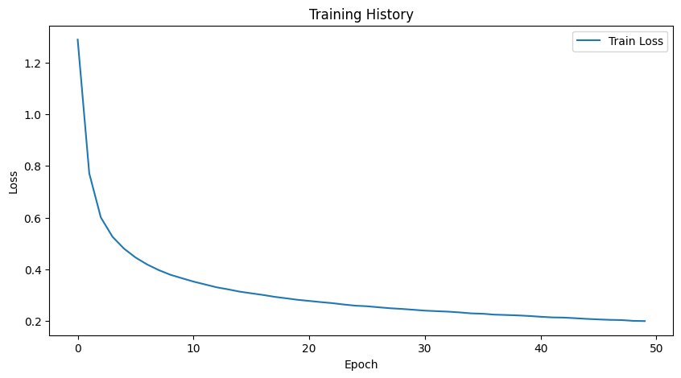

3W Toolkit
Version: 3.0.0
Authors: .icon-bullet li { list-style-type: none; position: relative; padding-left: 15px; } .icon-bullet li:before { content: “►”; position: absolute; left: 0; color: #2c3e50; font-size: 12px; }
Bruno Coelho Martins
Carla Pagliari
Eduardo A. B. Silva
Eduardo Henrique
Fernanda Duarte Vilela Reis de Oliveira
Gabriel Henrique Braga Lisboa
Luiza Helena de Andrade Leite
Marcello Campos
Matheus Ferreira Espirito Santo
Matheus Ramos Parracho
Natanael Moura Junior
Pedro Braga Lisboa
Rafael Padilla
Sergio Lima Netto
Thadeu Luiz Barbosa Dias
Umberto Augusto
Description: Demonstrative notebook with the main functions of 3W Toolkit.
Table of Contents 📑
🚀 Introduction to 3WToolkit 1.1. Installation with ``pip install` <#11-installation-with-pip-install>`__ 1.2. Cloning & Installing 1.3. Forking & Installing
📂 Dataset 3W 2.1. Loading the Dataset 2.2. Filtering & Exploring the Data
⚙️ Preprocessing 3.1. Cleaning the dataset 3.2. Handling missing values (Imputation) 3.3. Normalization 3.4. Renaming columns 3.5. Building preprocessing pipeline
🔎 Feature Extraction 4.1. Custom Feature Extraction pipeline 4.2. Windowing 4.3. Statistical Feature Extraction 4.4. Wavelet Feature Extraction 4.5. Exponentially Weighted Statistical Feature Extraction
📊 Exploratory Analysis 5.1. Visualization Tools
🤖 Model Training and Evaluation
🔗 Pipeline Integration
📄 Report Generation
🚀 1. Introduction to 3WToolkit
The 3WToolkit is a modular and open-source Artificial Intelligence (AI) toolkit for time series processing, designed for fault detection and classification in the operation of oil wells.
Based on the experience with the original 3W Toolkit system and using the 3W dataset from Petrobras, the 3W Toolkit offers enhanced features such as:
Advanced data imputation
Deep feature extraction
Synthetic data augmentation
High-performance computing capabilities for model training
Please find bellow different ways to install the 3WToolkit project hosted on GitHub: https://github.com/petrobras/3W.
1.1. Installation with pip install
pip install git+https://github.com/petrobras/3W.git
1.2. Cloning and installing
First, clone the repository and navigate into the project directory:
git clone https://github.com/petrobras/3W.git
cd 3W
Next, install the project in editable (development) mode. This allows you to modify the source code and have the changes reflected immediately without reinstalling the package.
You can choose between two installation methods:
Option A: Using pip (standard approach)
Recommended if you are already familiar with Python virtual environments and pip.
pip install -e .
Option B: Using uv (faster and modern alternative)
uv is a fast Python package manager and environment tool. It can create and manage virtual environments as well as install dependencies efficiently.
uv venv .venv
source .venv/bin/activate # On Windows use: .venv\Scripts\activate
uv pip install -e .
**Note:** The ``-e`` flag installs the project in editable mode, which is especially useful for development and contributing via pull requests.
1.3. Forking and installing
If you plan to contribute to the project, you should fork the repository instead of cloning it directly. This allows you to make changes in your own copy and later submit them via pull requests.
Fork the repository on GitHub (click the Fork button).

Clone your forked project:
<YOUR-USERNAME> with your GitHub username:```bash git clone https://github.com//3W.git cd 3W
Imports
In this section, we import the required libraries and modules used throughout the tutorial.
We rely on common scientific Python packages for data manipulation and visualization, along with the ThreeWToolkit components for dataset handling, preprocessing, feature extraction, and visualization.
[2]:
import numpy as np
import matplotlib.pyplot as plt
from ThreeWToolkit.dataset import ParquetDatasetConfig, TransformConfig
from ThreeWToolkit.preprocessing import (
ImputeMissingConfig,
NormalizeConfig,
RenameColumnsConfig,
CleanSignalsConfig,
FillLabelsConfig,
RemapClassConfig,
SequentialPreprocessingAdapterConfig,
)
from ThreeWToolkit.feature_extraction import (
WindowingConfig,
StatisticalConfig,
WaveletConfig,
EWStatisticalConfig,
SequentialFeatureAdapterConfig,
ConcatFeatureAdapterConfig
)
from ThreeWToolkit.data_visualization import DataVisualization
from ThreeWToolkit.models import MLPConfig
from ThreeWToolkit.trainer import TorchTrainerConfig
from ThreeWToolkit.assessment import ModelAssessmentConfig
📂 2. Dataset 3W
Format: Tabular, split into files in parquet format
Hosted on: 3W Dataset - Figshare
Size: 1.67 GB
Splits: 10 folders with parquet files, one folder for each event.
License & Usage: Apache 2.0
Define path
Here we define the path to the dataset directory. This path should point to the location where the dataset is stored on your machine.
[3]:
dataset_path = "../../dataset"
Make sure the directory structure matches the expected format of the project. If your dataset is located elsewhere, update the path accordingly.
Tip: You can also use absolute paths if you prefer, but relative paths make the project more portable across different environments.
2.1. Loading the Dataset
Let’s load the dataset using the ThreeWToolkit library.
We create a dataset configuration pointing to the dataset path and then build the dataset object:
[4]:
# Create and load
ds = ParquetDatasetConfig(path=dataset_path).build()
2026-04-22 23:41:46,135 | INFO | ThreeWToolkit.dataset.parquet_dataset | Dataset found at ../../dataset
2026-04-22 23:41:46,136 | INFO | ThreeWToolkit.dataset.parquet_dataset | Validating dataset integrity...
2026-04-22 23:41:46,139 | INFO | ThreeWToolkit.dataset.parquet_dataset | Dataset integrity check passed!
The ParquetDatasetConfig class is responsible for reading the dataset from disk and preparing it for further processing.
path: Directory where the dataset is stored..build(): Instantiates and loads the dataset.
Note: Make sure the dataset has been downloaded and extracted to the specified
dataset_pathbefore running this step. Otherwise, use theforce_downloadargument to download the dataset locally. ```
2.2. Filtering & Exploring the Data
In this section, we explore the structure of the dataset and inspect its contents.
First, let’s check how many events are available:
Calling len(ds) returns the number of samples available in the dataset.
[5]:
# Count events
total_events = len(ds)
print(f"Total events: {total_events}")
Total events: 2228
Each element in the dataset represents an event, which is an object containing the following fields:
signal: the time-series datalabel: the class or annotation associated with the eventmetadata: additional information about the event
Let’s inspect the structure of a single event:
[6]:
event_id = 1200
event = ds[event_id]
print(f"Event type: {type(event)}")
Event type: <class 'ThreeWToolkit.core.dataset_outputs.DatasetOutputs'>
We can also list the available fields in the event object:
[7]:
print("Available fields:", list(event.__class__.model_fields.keys()))
Available fields: ['signal', 'label', 'metadata']
Now, let’s take a closer look at the signal:
[8]:
signal = event.signal
print(f"Signal type: {type(signal)}")
print(f"Signal shape: {np.shape(signal)}")
Signal type: <class 'pandas.core.frame.DataFrame'>
Signal shape: (10653, 28)
[9]:
# Show a small preview
print("Signal preview:")
signal[:5]
Signal preview:
[9]:
| ABER-CKGL | ABER-CKP | ESTADO-DHSV | ESTADO-M1 | ESTADO-M2 | ESTADO-PXO | ESTADO-SDV-GL | ESTADO-SDV-P | ESTADO-W1 | ESTADO-W2 | ... | P-PDG | PT-P | P-TPT | QBS | QGL | T-JUS-CKP | T-MON-CKP | T-PDG | T-TPT | state | |
|---|---|---|---|---|---|---|---|---|---|---|---|---|---|---|---|---|---|---|---|---|---|
| timestamp | |||||||||||||||||||||
| 2017-09-17 03:02:28 | 100.0 | 42.80884 | NaN | NaN | NaN | NaN | 1.0 | 1.0 | 1.0 | NaN | ... | 23373210.0 | NaN | 13690090.0 | NaN | 1.046690 | 37.97378 | NaN | 61.74433 | 56.71452 | <NA> |
| 2017-09-17 03:02:29 | 100.0 | 42.80884 | NaN | NaN | NaN | NaN | 1.0 | 1.0 | 1.0 | NaN | ... | 23373360.0 | NaN | 13690150.0 | NaN | 1.053131 | 37.97408 | NaN | 61.74434 | 56.71438 | <NA> |
| 2017-09-17 03:02:30 | 100.0 | 42.80884 | NaN | NaN | NaN | NaN | 1.0 | 1.0 | 1.0 | NaN | ... | 23373500.0 | NaN | 13690200.0 | NaN | 1.059572 | 37.97438 | NaN | 61.74434 | 56.71424 | <NA> |
| 2017-09-17 03:02:31 | 100.0 | 42.80885 | NaN | NaN | NaN | NaN | 1.0 | 1.0 | 1.0 | NaN | ... | 23373640.0 | NaN | 13690390.0 | NaN | 1.066013 | 37.97467 | NaN | 61.74434 | 56.71406 | <NA> |
| 2017-09-17 03:02:32 | 100.0 | 42.80885 | NaN | NaN | NaN | NaN | 1.0 | 1.0 | 1.0 | NaN | ... | 23373780.0 | NaN | 13690580.0 | NaN | 1.072454 | 37.97498 | NaN | 61.74434 | 56.71388 | <NA> |
5 rows × 28 columns
Next, we inspect the labels:
[10]:
label = event.label
print(f"Label type: {type(label)}")
print(f"Label shape: {np.shape(label)}")
Label type: <class 'pandas.core.series.Series'>
Label shape: (10653,)
[11]:
print("Unique label values:")
print(np.unique(label))
Unique label values:
[ 4. nan]
[12]:
print("Label preview:")
print(label[5000:5010])
Label preview:
timestamp
2017-09-17 04:25:48 4
2017-09-17 04:25:49 4
2017-09-17 04:25:50 4
2017-09-17 04:25:51 4
2017-09-17 04:25:52 4
2017-09-17 04:25:53 4
2017-09-17 04:25:54 4
2017-09-17 04:25:55 4
2017-09-17 04:25:56 4
2017-09-17 04:25:57 4
Name: class, dtype: Int16
Optionally, we can also inspect the metadata:
[13]:
metadata = event.metadata
print("Metadata:")
print(metadata)
Metadata:
{'file_name': PosixPath('4/WELL-00014_20170917030228.parquet'), 'event_class': 4, 'event_type': 'real'}
The dataset can be filtered and split using different criteria such as event type, event class, or a custom file list:
Split by event type
We can filter the dataset by event type. Available options include: real, drawn, and simulated.
For example, selecting only DRAWN and SIMULATED events:
[14]:
ds = ParquetDatasetConfig(
path=dataset_path,
event_type=["drawn", "simulated"]
).build()
print(f"\nFiltered dataset size: {len(ds)}")
2026-04-22 23:41:47,155 | INFO | ThreeWToolkit.dataset.parquet_dataset | Dataset found at ../../dataset
2026-04-22 23:41:47,157 | INFO | ThreeWToolkit.dataset.parquet_dataset | Validating dataset integrity...
2026-04-22 23:41:47,165 | INFO | ThreeWToolkit.dataset.parquet_dataset | Dataset integrity check passed!
Filtered dataset size: 1109
Now selecting only REAL events:
[15]:
ds = ParquetDatasetConfig(
path=dataset_path,
event_type=["real"]
).build()
print(f"\nFiltered dataset size: {len(ds)}")
2026-04-22 23:41:47,644 | INFO | ThreeWToolkit.dataset.parquet_dataset | Dataset found at ../../dataset
2026-04-22 23:41:47,646 | INFO | ThreeWToolkit.dataset.parquet_dataset | Validating dataset integrity...
2026-04-22 23:41:47,649 | INFO | ThreeWToolkit.dataset.parquet_dataset | Dataset integrity check passed!
Filtered dataset size: 1119
Any combination of
real,drawn, andsimulatedis supported.
Split by event class
We can also filter the dataset based on event classes.
Selecting only events from class 0:
[16]:
target_class = [0]
ds = ParquetDatasetConfig(
path=dataset_path,
target_class=target_class
).build()
2026-04-22 23:41:48,098 | INFO | ThreeWToolkit.dataset.parquet_dataset | Dataset found at ../../dataset
2026-04-22 23:41:48,100 | INFO | ThreeWToolkit.dataset.parquet_dataset | Validating dataset integrity...
2026-04-22 23:41:48,103 | INFO | ThreeWToolkit.dataset.parquet_dataset | Dataset integrity check passed!
[17]:
print(f"Filtered dataset size: {len(ds)}")
print("Unique labels:", np.unique(ds[0].label))
Filtered dataset size: 594
Unique labels: [ 0. nan]
Selecting only class 2:
[18]:
target_class = [2]
ds = ParquetDatasetConfig(
path=dataset_path,
target_class=target_class
).build()
2026-04-22 23:41:48,752 | INFO | ThreeWToolkit.dataset.parquet_dataset | Dataset found at ../../dataset
2026-04-22 23:41:48,754 | INFO | ThreeWToolkit.dataset.parquet_dataset | Validating dataset integrity...
2026-04-22 23:41:48,759 | INFO | ThreeWToolkit.dataset.parquet_dataset | Dataset integrity check passed!
[19]:
print(f"Filtered dataset size: {len(ds)}")
print("Unique labels:", np.unique(ds[0].label))
Filtered dataset size: 38
Unique labels: [ 0 2 102]
Selecting multiple classes:
[20]:
target_class = [0, 2]
ds = ParquetDatasetConfig(
path=dataset_path,
target_class=target_class
).build()
2026-04-22 23:41:49,398 | INFO | ThreeWToolkit.dataset.parquet_dataset | Dataset found at ../../dataset
2026-04-22 23:41:49,399 | INFO | ThreeWToolkit.dataset.parquet_dataset | Validating dataset integrity...
2026-04-22 23:41:49,402 | INFO | ThreeWToolkit.dataset.parquet_dataset | Dataset integrity check passed!
[21]:
print(f"Filtered dataset size: {len(ds)}")
Filtered dataset size: 632
Combining filters
It is also possible to combine filters. For example, selecting only REAL events from class 2:
[22]:
target_class = [2]
ds = ParquetDatasetConfig(
path=dataset_path,
event_type=["real"],
target_class=target_class
).build()
2026-04-22 23:41:49,959 | INFO | ThreeWToolkit.dataset.parquet_dataset | Dataset found at ../../dataset
2026-04-22 23:41:49,962 | INFO | ThreeWToolkit.dataset.parquet_dataset | Validating dataset integrity...
2026-04-22 23:41:49,969 | INFO | ThreeWToolkit.dataset.parquet_dataset | Dataset integrity check passed!
[23]:
print(f"Filtered dataset size: {len(ds)}")
print("Unique labels:", np.unique(ds[0].label))
Filtered dataset size: 22
Unique labels: [ 0. 2. 102. nan]
Split using a file list
Another flexible approach is to define a custom split using a list of file paths.
This is especially useful for creating train/test splits.
Example of a file list (paths relative to the dataset root):
[24]:
my_split = [
"./0/WELL-00008_20170817140222.parquet",
"./3/SIMULATED_00061.parquet",
"./4/WELL-00004_20140806090103.parquet",
"./6/SIMULATED_00117.parquet",
"./0/WELL-00001_20170201110124.parquet",
"./5/SIMULATED_00138.parquet",
"./4/WELL-00005_20170624070158.parquet",
"./8/SIMULATED_00044.parquet",
"./5/SIMULATED_00303.parquet",
"./9/SIMULATED_00028.parquet",
"./8/SIMULATED_00072.parquet",
"./7/WELL-00022_20180802233838.parquet",
"./0/WELL-00003_20170812110000.parquet",
"./9/SIMULATED_00115.parquet",
"./1/SIMULATED_00025.parquet",
"./9/SIMULATED_00065.parquet",
"./6/SIMULATED_00041.parquet",
"./5/SIMULATED_00329.parquet",
"./4/WELL-00004_20141118160016.parquet",
"./6/SIMULATED_00095.parquet",
]
print(f"Number of files in split: {len(my_split)}")
Number of files in split: 20
Now, load only the selected files:
[25]:
ds = ParquetDatasetConfig(
path=dataset_path,
split="list",
file_list=my_split
).build()
2026-04-22 23:41:50,622 | INFO | ThreeWToolkit.dataset.parquet_dataset | Dataset found at ../../dataset
2026-04-22 23:41:50,624 | INFO | ThreeWToolkit.dataset.parquet_dataset | Validating dataset integrity...
2026-04-22 23:41:50,629 | INFO | ThreeWToolkit.dataset.parquet_dataset | Dataset integrity check passed!
[26]:
print(f"Filtered dataset size: {len(ds)}")
Filtered dataset size: 20
[27]:
# Inspect one sample
print("Sample label:", ds[2].label)
Sample label: timestamp
2014-08-06 09:01:03 <NA>
2014-08-06 09:01:04 <NA>
2014-08-06 09:01:05 <NA>
2014-08-06 09:01:06 <NA>
2014-08-06 09:01:07 <NA>
...
2014-08-06 11:59:56 4
2014-08-06 11:59:57 4
2014-08-06 11:59:58 4
2014-08-06 11:59:59 4
2014-08-06 12:00:00 4
Name: class, Length: 10738, dtype: Int16
Tip: You can store the file list in a
.txtfile and load it dynamically, which is useful for reproducible experiments.
3. ⚙️ Preprocessing
In this section, we demonstrate the usage of:
ImputeMissing→ Fill missing values using different strategiesNormalize→ Apply L1, L2, or max normalizationRenameColumns→ Rename DataFrame columns using a mapping dictionaryCleanSignals→ Identify frozen / out-of-range signals using IQR thresholdsFillLabels→ Fill missing values in labelsRemapClass→ Remap target classes into a sequential format
Inspecting a sample event
First, we select a single event from the dataset and inspect its signal:
[28]:
event_id = 2
event = ds[event_id]
print("Signal preview:")
event.signal.head()
Signal preview:
[28]:
| ABER-CKGL | ABER-CKP | ESTADO-DHSV | ESTADO-M1 | ESTADO-M2 | ESTADO-PXO | ESTADO-SDV-GL | ESTADO-SDV-P | ESTADO-W1 | ESTADO-W2 | ... | P-PDG | PT-P | P-TPT | QBS | QGL | T-JUS-CKP | T-MON-CKP | T-PDG | T-TPT | state | |
|---|---|---|---|---|---|---|---|---|---|---|---|---|---|---|---|---|---|---|---|---|---|
| timestamp | |||||||||||||||||||||
| 2014-08-06 09:01:03 | 0.0 | 29.57999 | 1.0 | 1.0 | 0.0 | 0.0 | NaN | NaN | 1.0 | 0.0 | ... | 0.0 | NaN | 17773410.0 | NaN | NaN | 68.95986 | NaN | 90.0 | 106.5635 | <NA> |
| 2014-08-06 09:01:04 | 0.0 | 29.58001 | 1.0 | 1.0 | 0.0 | 0.0 | NaN | NaN | 1.0 | 0.0 | ... | 0.0 | NaN | 17774250.0 | NaN | NaN | 68.97000 | NaN | 90.0 | 106.5635 | <NA> |
| 2014-08-06 09:01:05 | 0.0 | 29.58003 | 1.0 | 1.0 | 0.0 | 0.0 | NaN | NaN | 1.0 | 0.0 | ... | 0.0 | NaN | 17775080.0 | NaN | NaN | 68.98015 | NaN | 90.0 | 106.5635 | <NA> |
| 2014-08-06 09:01:06 | 0.0 | 29.58006 | 1.0 | 1.0 | 0.0 | 0.0 | NaN | NaN | 1.0 | 0.0 | ... | 0.0 | NaN | 17775920.0 | NaN | NaN | 68.96131 | NaN | 90.0 | 106.5635 | <NA> |
| 2014-08-06 09:01:07 | 0.0 | 29.58008 | 1.0 | 1.0 | 0.0 | 0.0 | NaN | NaN | 1.0 | 0.0 | ... | 0.0 | NaN | 17776750.0 | NaN | NaN | 68.94247 | NaN | 90.0 | 106.5635 | <NA> |
5 rows × 28 columns
3.1. Cleaning the dataset
Some signals may contain invalid values (e.g., frozen or out-of-range behavior). The toolkit provides utilities to clean these signals.
We also introduce the SequentialPreprocessingAdapterConfig, which allows chaining multiple preprocessing steps into a pipeline.
Key concepts:
Uses IQR-based thresholds to detect anomalies in signal statistics
Signals outside thresholds may be replaced with
NaNLower thresholds → stricter filtering
Higher thresholds → more lenient filtering
Columns with too many missing values can be dropped (
missing_columns_threshold)Designed for continuous signals (not categorical)
[29]:
ds = ParquetDatasetConfig(path=dataset_path).build()
print(f"\nNumber of columns before cleaning: {ds[0].signal.shape[1]}")
print("Columns before cleaning:")
print(ds[0].signal.columns.tolist())
2026-04-22 23:41:51,277 | INFO | ThreeWToolkit.dataset.parquet_dataset | Dataset found at ../../dataset
2026-04-22 23:41:51,278 | INFO | ThreeWToolkit.dataset.parquet_dataset | Validating dataset integrity...
2026-04-22 23:41:51,282 | INFO | ThreeWToolkit.dataset.parquet_dataset | Dataset integrity check passed!
Number of columns before cleaning: 28
Columns before cleaning:
['ABER-CKGL', 'ABER-CKP', 'ESTADO-DHSV', 'ESTADO-M1', 'ESTADO-M2', 'ESTADO-PXO', 'ESTADO-SDV-GL', 'ESTADO-SDV-P', 'ESTADO-W1', 'ESTADO-W2', 'ESTADO-XO', 'P-ANULAR', 'P-JUS-BS', 'P-JUS-CKGL', 'P-JUS-CKP', 'P-MON-CKGL', 'P-MON-CKP', 'P-MON-SDV-P', 'P-PDG', 'PT-P', 'P-TPT', 'QBS', 'QGL', 'T-JUS-CKP', 'T-MON-CKP', 'T-PDG', 'T-TPT', 'state']
[30]:
clean_signal = CleanSignalsConfig()
transformer = TransformConfig(pre_processing=clean_signal).build()
transformer.fit(ds)
transformed_ds = transformer.transform(ds)
print(f"\nNumber of columns after cleaning: {transformed_ds[0].signal.shape[1]}")
print("Columns after cleaning:")
print(transformed_ds[0].signal.columns.tolist())
Number of columns after cleaning: 15
Columns after cleaning:
['ESTADO-DHSV', 'ESTADO-M1', 'ESTADO-M2', 'ESTADO-PXO', 'ESTADO-SDV-GL', 'ESTADO-SDV-P', 'ESTADO-W1', 'ESTADO-W2', 'ESTADO-XO', 'P-MON-CKP', 'P-PDG', 'P-TPT', 'T-JUS-CKP', 'T-TPT', 'state']
3.2. Handling missing values (Imputation)
We can fill missing values using different strategies:
"mean"→ column mean"median"→ column median"constant"→ fixed value"ffill"→ forward fill"bfill"→ backward fill"interpolate"→ interpolation
Inspecting an event before imputation:
[31]:
print("Before imputation:")
ds[0].signal.head()
Before imputation:
[31]:
| ABER-CKGL | ABER-CKP | ESTADO-DHSV | ESTADO-M1 | ESTADO-M2 | ESTADO-PXO | ESTADO-SDV-GL | ESTADO-SDV-P | ESTADO-W1 | ESTADO-W2 | ... | P-PDG | PT-P | P-TPT | QBS | QGL | T-JUS-CKP | T-MON-CKP | T-PDG | T-TPT | state | |
|---|---|---|---|---|---|---|---|---|---|---|---|---|---|---|---|---|---|---|---|---|---|
| timestamp | |||||||||||||||||||||
| 2017-02-01 01:02:07 | NaN | NaN | 1.0 | 1.0 | 0.0 | 0.0 | 0.0 | 1.0 | 1.0 | 0.0 | ... | 0.0 | NaN | 10074540.0 | NaN | 0.0 | 84.64463 | NaN | 0.0 | 119.0781 | <NA> |
| 2017-02-01 01:02:08 | NaN | NaN | 1.0 | 1.0 | 0.0 | 0.0 | 0.0 | 1.0 | 1.0 | 0.0 | ... | 0.0 | NaN | 10074540.0 | NaN | 0.0 | 84.63828 | NaN | 0.0 | 119.0781 | <NA> |
| 2017-02-01 01:02:09 | NaN | NaN | 1.0 | 1.0 | 0.0 | 0.0 | 0.0 | 1.0 | 1.0 | 0.0 | ... | 0.0 | NaN | 10074540.0 | NaN | 0.0 | 84.63194 | NaN | 0.0 | 119.0781 | <NA> |
| 2017-02-01 01:02:10 | NaN | NaN | 1.0 | 1.0 | 0.0 | 0.0 | 0.0 | 1.0 | 1.0 | 0.0 | ... | 0.0 | NaN | 10074540.0 | NaN | 0.0 | 84.62558 | NaN | 0.0 | 119.0781 | <NA> |
| 2017-02-01 01:02:11 | NaN | NaN | 1.0 | 1.0 | 0.0 | 0.0 | 0.0 | 1.0 | 1.0 | 0.0 | ... | 0.0 | NaN | 10074540.0 | NaN | 0.0 | 84.61923 | NaN | 0.0 | 119.0781 | <NA> |
5 rows × 28 columns
Applying mean imputation:
[32]:
clean_signal = CleanSignalsConfig()
impute_missing = ImputeMissingConfig(strategy="mean")
transformer = TransformConfig(
pre_processing=SequentialPreprocessingAdapterConfig(
steps=[clean_signal, impute_missing]
)
).build()
transformer.fit(ds)
transformed_ds = transformer.transform(ds)
[33]:
print("\nAfter mean imputation:")
transformed_ds[0].signal.head()
After mean imputation:
[33]:
| ESTADO-DHSV | ESTADO-M1 | ESTADO-M2 | ESTADO-PXO | ESTADO-SDV-GL | ESTADO-SDV-P | ESTADO-W1 | ESTADO-W2 | ESTADO-XO | P-MON-CKP | P-PDG | P-TPT | T-JUS-CKP | T-TPT | state | |
|---|---|---|---|---|---|---|---|---|---|---|---|---|---|---|---|
| timestamp | |||||||||||||||
| 2017-02-01 01:02:07 | 1.0 | 1.0 | 0.0 | 0.0 | 0.0 | 1.0 | 1.0 | 0.0 | 0.0 | 1627884.0 | 2.173313e+07 | 10074540.0 | 84.64463 | 119.0781 | 0.107588 |
| 2017-02-01 01:02:08 | 1.0 | 1.0 | 0.0 | 0.0 | 0.0 | 1.0 | 1.0 | 0.0 | 0.0 | 1633397.0 | 2.173313e+07 | 10074540.0 | 84.63828 | 119.0781 | 0.107588 |
| 2017-02-01 01:02:09 | 1.0 | 1.0 | 0.0 | 0.0 | 0.0 | 1.0 | 1.0 | 0.0 | 0.0 | 1638909.0 | 2.173313e+07 | 10074540.0 | 84.63194 | 119.0781 | 0.107588 |
| 2017-02-01 01:02:10 | 1.0 | 1.0 | 0.0 | 0.0 | 0.0 | 1.0 | 1.0 | 0.0 | 0.0 | 1644422.0 | 2.173313e+07 | 10074540.0 | 84.62558 | 119.0781 | 0.107588 |
| 2017-02-01 01:02:11 | 1.0 | 1.0 | 0.0 | 0.0 | 0.0 | 1.0 | 1.0 | 0.0 | 0.0 | 1649934.0 | 2.173313e+07 | 10074540.0 | 84.61923 | 119.0781 | 0.107588 |
3.3. Normalization
Normalization scales the data using one of the following norms:
"l1"→ sum of absolute values = 1"l2"→ Euclidean norm = 1"max"→ divide by maximum absolute value
Checking values before normalization:
[34]:
print("Before normalization:")
ds[0].signal["T-TPT"].head(10)
Before normalization:
[34]:
timestamp
2017-02-01 01:02:07 119.0781
2017-02-01 01:02:08 119.0781
2017-02-01 01:02:09 119.0781
2017-02-01 01:02:10 119.0781
2017-02-01 01:02:11 119.0781
2017-02-01 01:02:12 119.0781
2017-02-01 01:02:13 119.0781
2017-02-01 01:02:14 119.0781
2017-02-01 01:02:15 119.0781
2017-02-01 01:02:16 119.0781
Name: T-TPT, dtype: float64
Applying the normalization and checking results:
[35]:
normalize_step = NormalizeConfig(norm="l2")
transformer = TransformConfig(
pre_processing=SequentialPreprocessingAdapterConfig(
steps=[clean_signal, normalize_step]
)
).build()
transformer.fit(ds)
transformed_ds = transformer.transform(ds)
[36]:
print("\nAfter normalization:")
transformed_ds[0].signal["T-TPT"].head(10)
After normalization:
[36]:
timestamp
2017-02-01 01:02:07 0.634582
2017-02-01 01:02:08 0.634582
2017-02-01 01:02:09 0.634582
2017-02-01 01:02:10 0.634582
2017-02-01 01:02:11 0.634582
2017-02-01 01:02:12 0.634582
2017-02-01 01:02:13 0.634582
2017-02-01 01:02:14 0.634582
2017-02-01 01:02:15 0.634582
2017-02-01 01:02:16 0.634582
Name: T-TPT, dtype: float64
3.4. Renaming columns
Function to rename columns of a DataFrame using a mapping dictionary
The function accepts:
A dictionary (
columns_map) where:Keys are the current column names
Values are the new column names to assign
Checking columns before renaming:
[37]:
print("Before renaming:")
print(ds[0].signal.columns.tolist())
Before renaming:
['ABER-CKGL', 'ABER-CKP', 'ESTADO-DHSV', 'ESTADO-M1', 'ESTADO-M2', 'ESTADO-PXO', 'ESTADO-SDV-GL', 'ESTADO-SDV-P', 'ESTADO-W1', 'ESTADO-W2', 'ESTADO-XO', 'P-ANULAR', 'P-JUS-BS', 'P-JUS-CKGL', 'P-JUS-CKP', 'P-MON-CKGL', 'P-MON-CKP', 'P-MON-SDV-P', 'P-PDG', 'PT-P', 'P-TPT', 'QBS', 'QGL', 'T-JUS-CKP', 'T-MON-CKP', 'T-PDG', 'T-TPT', 'state']
Applying renaming and checking the changes:
[38]:
columns_map = {
"ABER-CKGL": "sensor_A",
"ABER-CKP": "sensor_B"
}
rename_step = RenameColumnsConfig(columns_map=columns_map)
transformer = TransformConfig(pre_processing=rename_step).build()
transformer.fit(ds)
transformed_ds = transformer.transform(ds)
[39]:
print("\nAfter renaming:")
print(transformed_ds[0].signal.columns.tolist())
After renaming:
['sensor_A', 'sensor_B', 'ESTADO-DHSV', 'ESTADO-M1', 'ESTADO-M2', 'ESTADO-PXO', 'ESTADO-SDV-GL', 'ESTADO-SDV-P', 'ESTADO-W1', 'ESTADO-W2', 'ESTADO-XO', 'P-ANULAR', 'P-JUS-BS', 'P-JUS-CKGL', 'P-JUS-CKP', 'P-MON-CKGL', 'P-MON-CKP', 'P-MON-SDV-P', 'P-PDG', 'PT-P', 'P-TPT', 'QBS', 'QGL', 'T-JUS-CKP', 'T-MON-CKP', 'T-PDG', 'T-TPT', 'state']
3.5. Building preprocessing pipelines
One of the main advantages of the toolkit is the ability to combine multiple preprocessing steps into a single pipeline.
[40]:
pipeline = SequentialPreprocessingAdapterConfig(
steps=[
CleanSignalsConfig(),
ImputeMissingConfig(strategy="mean"),
NormalizeConfig(norm="l2")
]
)
transformer = TransformConfig(pre_processing=pipeline).build()
transformer.fit(ds)
transformed_ds = transformer.transform(ds)
print("Pipeline applied successfully.")
Pipeline applied successfully.
Tip: Using pipelines ensures consistency between training and inference, and makes experiments reproducible.
4. 🔎 Feature Extraction
This process converts a sequence of data points into a structured feature vector that can be used by machine learning models.
⚠️ Important: Windowing comes first
The workflow is always:
Windowing step → split the signal into segments
Feature extraction step → compute features for each window
First, we select a subset of the dataset for feature extraction:
[41]:
ds = ParquetDatasetConfig(
path=dataset_path,
event_type=["real"],
).build()
print(f"\nNumber of events in the dataset: {len(ds)}")
2026-04-23 00:12:26,416 | INFO | ThreeWToolkit.dataset.parquet_dataset | Dataset found at ../../dataset
2026-04-23 00:12:26,418 | INFO | ThreeWToolkit.dataset.parquet_dataset | Validating dataset integrity...
2026-04-23 00:12:26,428 | INFO | ThreeWToolkit.dataset.parquet_dataset | Dataset integrity check passed!
Number of events in the dataset: 1119
4.1. Custom feature extraction pipelines
To extract features using the ThreeWToolkit, we define transformation pipelines using:
TransformConfigSequentialFeatureAdapterConfigConcatFeatureAdapterConfig
These classes allow us to compose flexible and reusable feature extraction pipelines.
Using the Transform class, the pipeline of feature extraction can be defined like this:
[42]:
transformer = TransformConfig(
feature_extraction=SequentialFeatureAdapterConfig(
steps=[
# Step 1: Windowing (required)
WindowingConfig(),
# Step 2: Feature extraction
ConcatFeatureAdapterConfig(
steps=[
StatisticalConfig(),
EWStatisticalConfig(),
WaveletConfig(),
]
),
]
),
).build()
Explanation:
WindowingConfig()→ splits the signal into fixed-size segmentsStatisticalConfig()→ extracts statistical features (mean, std, etc.)EWStatisticalConfig()→ extracts exponentially weighted statisticsWaveletConfig()→ extracts wavelet-based featuresConcatFeatureAdapterConfig→ concatenates all extracted features into a single vector
Preprocessing before feature extraction
Before applying feature extraction, we define a preprocessing pipeline to clean the data:
[43]:
pre_processing_pipeline = SequentialPreprocessingAdapterConfig(
steps=[
CleanSignalsConfig(),
ImputeMissingConfig(),
]
)
This ensures that:
Invalid signals are cleaned
Missing values are handled before feature computation
Putting everything together
Now we combine preprocessing and feature extraction into a single transformer:
[44]:
transformer = TransformConfig(
pre_processing=pre_processing_pipeline,
feature_extraction=SequentialFeatureAdapterConfig(
steps=[
WindowingConfig(),
ConcatFeatureAdapterConfig(
steps=[
StatisticalConfig(),
EWStatisticalConfig(),
WaveletConfig(),
]
),
]
),
).build()
transformer.fit(ds)
transformed_ds = transformer.transform(ds)
print("Feature extraction completed.")
Feature extraction completed.
This pipeline-based approach makes it easy to:
Reuse transformations
Maintain consistency between training and inference
Experiment with different feature combinations
In the next sections, we will explore each feature extraction method in more detail.
4.2. Windowing
Windowing step is responsible for splitting a 1D time-series into overlapping segments (windows).Parameters:
window(default=”hann”): Windowing function (e.g.,"hann","hamming")window_size(default=4): Number of samples per windowoverlap(default=0.0): Overlap ratio between consecutive windows (0 ≤ overlap < 1)pad_last_window(default=False): Whether to pad the last window if incompletepad_value(default=0.0): Value used for padding
[45]:
#### Example: Applying windowing
data_processor = TransformConfig(
pre_processing=pre_processing_pipeline,
feature_extraction=WindowingConfig(window_size=128),
).build()
data_processor.fit(ds)
transformed_data = data_processor.transform(ds)
single_event = transformed_data[0]
print(f"Windowed signal shape: {single_event.signal.shape}")
print("-" * 50)
print("Columns:")
print(single_event.signal.columns)
print("-" * 50)
print("Preview:")
print(single_event.signal.head())
print("-" * 50)
Windowed signal shape: (2688, 128)
--------------------------------------------------
Columns:
RangeIndex(start=0, stop=128, step=1)
--------------------------------------------------
Preview:
0 1 2 3 4 5 6 7 8 9 ... \
window variable ...
0 ESTADO-DHSV 1.0 1.0 1.0 1.0 1.0 1.0 1.0 1.0 1.0 1.0 ...
ESTADO-M1 1.0 1.0 1.0 1.0 1.0 1.0 1.0 1.0 1.0 1.0 ...
ESTADO-M2 0.0 0.0 0.0 0.0 0.0 0.0 0.0 0.0 0.0 0.0 ...
ESTADO-PXO 0.0 0.0 0.0 0.0 0.0 0.0 0.0 0.0 0.0 0.0 ...
ESTADO-SDV-GL 0.0 0.0 0.0 0.0 0.0 0.0 0.0 0.0 0.0 0.0 ...
118 119 120 121 122 123 124 125 126 127
window variable
0 ESTADO-DHSV 1.0 1.0 1.0 1.0 1.0 1.0 1.0 1.0 1.0 1.0
ESTADO-M1 1.0 1.0 1.0 1.0 1.0 1.0 1.0 1.0 1.0 1.0
ESTADO-M2 0.0 0.0 0.0 0.0 0.0 0.0 0.0 0.0 0.0 0.0
ESTADO-PXO 0.0 0.0 0.0 0.0 0.0 0.0 0.0 0.0 0.0 0.0
ESTADO-SDV-GL 0.0 0.0 0.0 0.0 0.0 0.0 0.0 0.0 0.0 0.0
[5 rows x 128 columns]
--------------------------------------------------
Note: After windowing, each row corresponds to a windowed segment of the original signal.
4.3. Statistical Feature Extraction
Statistical feature extraction is one of the most common approaches for time-series data. The StatisticalConfig class computes descriptive statistics for each window, summarizing its distribution and behavior.
Available features include:
Central tendency & dispersion:
mean,stdDistribution shape:
skew,kurtosisRange & quantiles:
min,1qrt,med,3qrt,max
[46]:
#### Example: Windowing + Statistical features
windowing_config = WindowingConfig(window_size=128)
data_processor = TransformConfig(
pre_processing=ImputeMissingConfig(),
feature_extraction=SequentialFeatureAdapterConfig(
steps=[
windowing_config,
StatisticalConfig(features=["mean", "std", "min", "max"]),
]
),
).build()
data_processor.fit(ds)
transformed_data = data_processor.transform(ds)
single_event = transformed_data[0]
print(f"Feature matrix shape: {single_event.signal.shape}")
print("-" * 50)
print("Feature columns:")
print(single_event.signal.columns)
print("-" * 50)
print("Preview:")
print("-" * 50)
single_event.signal.head()
Feature matrix shape: (168, 112)
--------------------------------------------------
Feature columns:
Index(['mean_ABER-CKGL', 'mean_ABER-CKP', 'mean_ESTADO-DHSV', 'mean_ESTADO-M1',
'mean_ESTADO-M2', 'mean_ESTADO-PXO', 'mean_ESTADO-SDV-GL',
'mean_ESTADO-SDV-P', 'mean_ESTADO-W1', 'mean_ESTADO-W2',
...
'max_P-PDG', 'max_P-TPT', 'max_PT-P', 'max_QBS', 'max_QGL',
'max_T-JUS-CKP', 'max_T-MON-CKP', 'max_T-PDG', 'max_T-TPT',
'max_state'],
dtype='object', length=112)
--------------------------------------------------
Preview:
--------------------------------------------------
[46]:
| mean_ABER-CKGL | mean_ABER-CKP | mean_ESTADO-DHSV | mean_ESTADO-M1 | mean_ESTADO-M2 | mean_ESTADO-PXO | mean_ESTADO-SDV-GL | mean_ESTADO-SDV-P | mean_ESTADO-W1 | mean_ESTADO-W2 | ... | max_P-PDG | max_P-TPT | max_PT-P | max_QBS | max_QGL | max_T-JUS-CKP | max_T-MON-CKP | max_T-PDG | max_T-TPT | max_state | |
|---|---|---|---|---|---|---|---|---|---|---|---|---|---|---|---|---|---|---|---|---|---|
| window | |||||||||||||||||||||
| 0 | 0.0 | 0.0 | 1.0 | 1.0 | 0.0 | 0.0 | 0.0 | 1.0 | 1.0 | 0.0 | ... | 0.0 | 10074540.0 | 0.0 | 0.0 | 0.0 | 84.64463 | 0.0 | 0.0 | 119.0781 | 0.0 |
| 1 | 0.0 | 0.0 | 1.0 | 1.0 | 0.0 | 0.0 | 0.0 | 1.0 | 1.0 | 0.0 | ... | 0.0 | 10074540.0 | 0.0 | 0.0 | 0.0 | 85.05927 | 0.0 | 0.0 | 119.0786 | 0.0 |
| 2 | 0.0 | 0.0 | 1.0 | 1.0 | 0.0 | 0.0 | 0.0 | 1.0 | 1.0 | 0.0 | ... | 0.0 | 10074540.0 | 0.0 | 0.0 | 0.0 | 85.30231 | 0.0 | 0.0 | 119.0792 | 0.0 |
| 3 | 0.0 | 0.0 | 1.0 | 1.0 | 0.0 | 0.0 | 0.0 | 1.0 | 1.0 | 0.0 | ... | 0.0 | 10074540.0 | 0.0 | 0.0 | 0.0 | 84.68998 | 0.0 | 0.0 | 119.0798 | 0.0 |
| 4 | 0.0 | 0.0 | 1.0 | 1.0 | 0.0 | 0.0 | 0.0 | 1.0 | 1.0 | 0.0 | ... | 0.0 | 10074540.0 | 0.0 | 0.0 | 0.0 | 84.54279 | 0.0 | 0.0 | 119.0804 | 0.0 |
5 rows × 112 columns
What is happening here:
The signal is split into windows (
WindowingConfig)For each window, statistical features are computed
The output is a tabular representation where:
Each row = one window
Each column = one feature
This transformation is fundamental for converting raw time-series into structured data suitable for machine learning models.
4.4. Wavelet Feature Extraction
Wavelet class applies the Stationary Wavelet Transform (SWT) to each window of the signal.For each decomposition level, two types of coefficients are generated:
Approximation coefficients (A) → capture low-frequency trends (smoothed signal)
Detail coefficients (D) → capture high-frequency components (spikes, noise, abrupt changes)
This separation helps the model distinguish between the overall behavior of the signal and its fine-grained variations.
[47]:
# Example: Windowing + Wavelet features
# Shared parameters
LEVEL = 7
WINDOW_SIZE = 128
OVERLAP = 0.875
# Windowing configuration
windowing_config = WindowingConfig(
window_size=WINDOW_SIZE,
overlap=OVERLAP,
window="boxcar"
)
[48]:
# Feature extraction pipeline
data_processor = TransformConfig(
pre_processing=pre_processing_pipeline,
feature_extraction=SequentialFeatureAdapterConfig(
steps=[
windowing_config,
WaveletConfig(level=LEVEL),
]
),
).build()
data_processor.fit(ds)
transformed_data = data_processor.transform(ds)
single_event = transformed_data[0]
print(f"Feature matrix shape: {single_event.signal.shape}")
print("-" * 50)
print("Feature columns:")
print(single_event.signal.columns)
print("-" * 50)
print("Preview:")
print("-" * 50)
single_event.signal.head()
Feature matrix shape: (1343, 144)
--------------------------------------------------
Feature columns:
Index(['A7_ESTADO-DHSV', 'A7_ESTADO-M1', 'A7_ESTADO-M2', 'A7_ESTADO-PXO',
'A7_ESTADO-SDV-GL', 'A7_ESTADO-SDV-P', 'A7_ESTADO-W1', 'A7_ESTADO-W2',
'A7_ESTADO-XO', 'A7_P-ANULAR',
...
'A0_ESTADO-W1', 'A0_ESTADO-W2', 'A0_ESTADO-XO', 'A0_P-ANULAR',
'A0_P-JUS-CKGL', 'A0_P-MON-CKP', 'A0_P-TPT', 'A0_T-JUS-CKP', 'A0_T-TPT',
'A0_state'],
dtype='object', length=144)
--------------------------------------------------
Preview:
--------------------------------------------------
[48]:
| A7_ESTADO-DHSV | A7_ESTADO-M1 | A7_ESTADO-M2 | A7_ESTADO-PXO | A7_ESTADO-SDV-GL | A7_ESTADO-SDV-P | A7_ESTADO-W1 | A7_ESTADO-W2 | A7_ESTADO-XO | A7_P-ANULAR | ... | A0_ESTADO-W1 | A0_ESTADO-W2 | A0_ESTADO-XO | A0_P-ANULAR | A0_P-JUS-CKGL | A0_P-MON-CKP | A0_P-TPT | A0_T-JUS-CKP | A0_T-TPT | A0_state | |
|---|---|---|---|---|---|---|---|---|---|---|---|---|---|---|---|---|---|---|---|---|---|
| window | |||||||||||||||||||||
| 0 | 11.313708 | 11.313708 | 0.0 | 0.0 | 0.0 | 11.313708 | 11.313708 | 0.0 | 0.0 | 1.444504e+08 | ... | 1.0 | 0.0 | 0.0 | 12767730.0 | 1563422.0 | 1627884.0 | 10074540.0 | 84.64463 | 119.0781 | 0.0 |
| 1 | 11.313708 | 11.313708 | 0.0 | 0.0 | 0.0 | 11.313708 | 11.313708 | 0.0 | 0.0 | 1.444504e+08 | ... | 1.0 | 0.0 | 0.0 | 12767730.0 | 1563425.0 | 1716084.0 | 10074540.0 | 84.54303 | 119.0781 | 0.0 |
| 2 | 11.313708 | 11.313708 | 0.0 | 0.0 | 0.0 | 11.313708 | 11.313708 | 0.0 | 0.0 | 1.444504e+08 | ... | 1.0 | 0.0 | 0.0 | 12767730.0 | 1563428.0 | 1622497.0 | 10074540.0 | 84.50632 | 119.0782 | 0.0 |
| 3 | 11.313708 | 11.313708 | 0.0 | 0.0 | 0.0 | 11.313708 | 11.313708 | 0.0 | 0.0 | 1.444504e+08 | ... | 1.0 | 0.0 | 0.0 | 12767730.0 | 1563431.0 | 1746001.0 | 10074540.0 | 84.66431 | 119.0783 | 0.0 |
| 4 | 11.313708 | 11.313708 | 0.0 | 0.0 | 0.0 | 11.313708 | 11.313708 | 0.0 | 0.0 | 1.444504e+08 | ... | 1.0 | 0.0 | 0.0 | 12767730.0 | 1563435.0 | 1807315.0 | 10074540.0 | 84.82229 | 119.0783 | 0.0 |
5 rows × 144 columns
Note: Higher wavelet levels increase frequency resolution but also increase the number of extracted features.
4.5. Exponentially Weighted Statistical Feature Extraction
The EWStatisticalConfig class computes statistical features using exponentially weighted values.
Unlike standard statistics, where all samples contribute equally, this method gives more importance to recent samples within each window.
The weighting is controlled by the decay parameter:
Values closer to
1.0→ slower decay (older samples still relevant)Values closer to
0.0→ faster decay (focus on recent samples)
This approach is particularly useful when recent behavior is more informative than earlier data within a window.
[49]:
# Example: Windowing + EW statistical features
WINDOW_SIZE = 128
data_processor = TransformConfig(
pre_processing=pre_processing_pipeline,
feature_extraction=SequentialFeatureAdapterConfig(
steps=[
WindowingConfig(window_size=WINDOW_SIZE),
EWStatisticalConfig(decay=0.9),
]
),
).build()
data_processor.fit(ds)
transformed_data = data_processor.transform(ds)
single_event = transformed_data[0]
print(f"Feature matrix shape: {single_event.signal.shape}")
print("-" * 50)
print("Feature columns:")
print(single_event.signal.columns)
print("-" * 50)
print("Preview:")
print("-" * 50)
single_event.signal.head()
Feature matrix shape: (168, 144)
--------------------------------------------------
Feature columns:
Index(['ew_mean_ESTADO-DHSV', 'ew_mean_ESTADO-M1', 'ew_mean_ESTADO-M2',
'ew_mean_ESTADO-PXO', 'ew_mean_ESTADO-SDV-GL', 'ew_mean_ESTADO-SDV-P',
'ew_mean_ESTADO-W1', 'ew_mean_ESTADO-W2', 'ew_mean_ESTADO-XO',
'ew_mean_P-ANULAR',
...
'ew_max_ESTADO-W1', 'ew_max_ESTADO-W2', 'ew_max_ESTADO-XO',
'ew_max_P-ANULAR', 'ew_max_P-JUS-CKGL', 'ew_max_P-MON-CKP',
'ew_max_P-TPT', 'ew_max_T-JUS-CKP', 'ew_max_T-TPT', 'ew_max_state'],
dtype='object', length=144)
--------------------------------------------------
Preview:
--------------------------------------------------
[49]:
| ew_mean_ESTADO-DHSV | ew_mean_ESTADO-M1 | ew_mean_ESTADO-M2 | ew_mean_ESTADO-PXO | ew_mean_ESTADO-SDV-GL | ew_mean_ESTADO-SDV-P | ew_mean_ESTADO-W1 | ew_mean_ESTADO-W2 | ew_mean_ESTADO-XO | ew_mean_P-ANULAR | ... | ew_max_ESTADO-W1 | ew_max_ESTADO-W2 | ew_max_ESTADO-XO | ew_max_P-ANULAR | ew_max_P-JUS-CKGL | ew_max_P-MON-CKP | ew_max_P-TPT | ew_max_T-JUS-CKP | ew_max_T-TPT | ew_max_state | |
|---|---|---|---|---|---|---|---|---|---|---|---|---|---|---|---|---|---|---|---|---|---|
| window | |||||||||||||||||||||
| 0 | 1.0 | 1.0 | 0.0 | 0.0 | 0.0 | 1.0 | 1.0 | 0.0 | 0.0 | 12767730.0 | ... | 0.0 | 0.0 | 0.0 | 0.0 | 0.000000 | 0.000000 | 0.157018 | 0.000000 | 0.000000 | 0.0 |
| 1 | 1.0 | 1.0 | 0.0 | 0.0 | 0.0 | 1.0 | 1.0 | 0.0 | 0.0 | 12767730.0 | ... | 0.0 | 0.0 | 0.0 | 0.0 | 1.131275 | 2.507936 | 0.157018 | 7.124940 | 0.351390 | 0.0 |
| 2 | 1.0 | 1.0 | 0.0 | 0.0 | 0.0 | 1.0 | 1.0 | 0.0 | 0.0 | 12767730.0 | ... | 0.0 | 0.0 | 0.0 | 0.0 | 0.761720 | 2.218195 | 0.157018 | 2.707456 | 0.480122 | 0.0 |
| 3 | 1.0 | 1.0 | 0.0 | 0.0 | 0.0 | 1.0 | 1.0 | 0.0 | 0.0 | 12767730.0 | ... | 0.0 | 0.0 | 0.0 | 0.0 | 0.895749 | 2.082705 | 0.157018 | 22.349038 | 0.588199 | 0.0 |
| 4 | 1.0 | 1.0 | 0.0 | 0.0 | 0.0 | 1.0 | 1.0 | 0.0 | 0.0 | 12767730.0 | ... | 0.0 | 0.0 | 0.0 | 0.0 | 0.941564 | 8.840530 | 0.157018 | 3.914630 | 0.798235 | 0.0 |
5 rows × 144 columns
Summary
Wavelet features → capture frequency-based patterns (trend vs noise)
Statistical features → summarize distribution within windows
EW statistical features → emphasize recent behavior
These complementary approaches can be combined to build richer and more informative feature representations.
5. 📊 Exploratory Analysis
In this section, we explore and visualize signals from the dataset to better understand their behavior and relationships.
5.1. Visualization Tools Overview
The 3WToolkit provides ready-to-use visualization utilities for time-series analysis:
``DataVisualization.plot_series(…)`` → Plot a single time series
``DataVisualization.plot_multiple_series(…)`` → Plot multiple series for comparison
``DataVisualization.correlation_heatmap(…)`` → Visualize correlations between features
These tools simplify exploratory analysis and help identify patterns, trends, and relationships in the data.
Selecting an event to plot
[50]:
ds = ParquetDatasetConfig(
path=dataset_path,
event_type=["real"],
).build()
sig = ds[2].signal.copy()
2026-04-23 00:19:32,184 | INFO | ThreeWToolkit.dataset.parquet_dataset | Dataset found at ../../dataset
2026-04-23 00:19:32,186 | INFO | ThreeWToolkit.dataset.parquet_dataset | Validating dataset integrity...
2026-04-23 00:19:32,189 | INFO | ThreeWToolkit.dataset.parquet_dataset | Dataset integrity check passed!
[51]:
print("Selected event shape:", sig.shape)
print("Available columns:", sig.columns.tolist())
Selected event shape: (21517, 28)
Available columns: ['ABER-CKGL', 'ABER-CKP', 'ESTADO-DHSV', 'ESTADO-M1', 'ESTADO-M2', 'ESTADO-PXO', 'ESTADO-SDV-GL', 'ESTADO-SDV-P', 'ESTADO-W1', 'ESTADO-W2', 'ESTADO-XO', 'P-ANULAR', 'P-JUS-BS', 'P-JUS-CKGL', 'P-JUS-CKP', 'P-MON-CKGL', 'P-MON-CKP', 'P-MON-SDV-P', 'P-PDG', 'PT-P', 'P-TPT', 'QBS', 'QGL', 'T-JUS-CKP', 'T-MON-CKP', 'T-PDG', 'T-TPT', 'state']
Single Series Example
The plot_series function allows quick visualization of a single signal.
This is useful for identifying:
Trends
Variability
Missing values
[52]:
series = sig["T-TPT"]
fig, path = DataVisualization.plot_series(
series=series,
title="T-TPT",
xlabel="Timestamp",
ylabel="T-TPT",
overlay_events=False,
color="green",
)
plt.show()

Multiple Series Example
The plot_multiple_series function allows plotting multiple signals together.
This is helpful for:
Comparing signals
Observing correlations visually
Identifying synchronized patterns
[53]:
features = ["T-JUS-CKP", "T-TPT"]
series_list = [sig[f] for f in features]
fig, ax = plt.subplots(figsize=(12, 5))
DataVisualization.plot_multiple_series(
series_list=series_list,
labels=features,
title="T-JUS-CKP vs T-TPT",
xlabel="Timestamp",
ylabel="Value",
ax=ax,
)
plt.show()

Correlation Heatmap Example
The correlation_heatmap function computes and visualizes pairwise correlations between features.
This is useful for:
Detecting redundant features
Understanding relationships between variables
Guiding feature selection
[54]:
features = [
"P-ANULAR",
"P-JUS-CKGL",
"P-MON-CKP",
"P-TPT",
"T-JUS-CKP",
"T-TPT",
]
subset = sig[features]
fig = DataVisualization.correlation_heatmap(
df_of_series=subset,
title="Correlation Heatmap of Selected Features",
)
plt.show()

Key Takeaways
Visualization helps validate preprocessing steps and understand signal behavior
Single plots reveal individual patterns and anomalies
Multi-series plots enable direct comparison between features
Correlation heatmaps highlight relationships and redundancy
These tools are essential for building intuition before moving to modeling.
6. 🤖 Model Training and Evaluation
In this section, we demonstrate how to train and evaluate machine learning models using the 3WToolkit.
The goal is to transform raw time-series data into a structured dataset suitable for supervised learning. Each window extracted from the signal will be treated as an independent sample, with its corresponding label.
The workflow includes:
Loading the dataset
Splitting into train/validation/test sets
Preprocessing and feature extraction
Training a model
Evaluating performance
First we import the relevant modules and initialize a ParquetDataset instance, defining the target classes 0, 1 and 2.
6.1. Dataset loading and manual split
In this example, we use only REAL events and manually split the dataset into training, validation, and test sets.
ParquetDataset does not provide a built-in method for splitting datasets, we perform this step manually using file lists.Step 1: Load dataset
[55]:
RANDOM_SEED = 2026
dataset_path = "../../dataset"
classes = [0, 1, 2]
ds = ParquetDatasetConfig(
path=dataset_path,
event_type=["real"],
target_class=classes,
).build()
print(f"\nTotal events: {len(ds)}")
2026-04-23 00:19:33,602 | INFO | ThreeWToolkit.dataset.parquet_dataset | Dataset found at ../../dataset
2026-04-23 00:19:33,604 | INFO | ThreeWToolkit.dataset.parquet_dataset | Validating dataset integrity...
2026-04-23 00:19:33,607 | INFO | ThreeWToolkit.dataset.parquet_dataset | Dataset integrity check passed!
Total events: 620
Step 2: Shuffle and split indices
We randomly shuffle the dataset and split it into:
70% training
15% validation
15% testing
[56]:
np.random.seed(RANDOM_SEED)
all_files = ds.files_events
indices = np.arange(len(all_files))
np.random.shuffle(indices)
n = len(indices)
train_end = int(0.7 * n)
val_end = int(0.85 * n)
train_idx = indices[:train_end]
val_idx = indices[train_end:val_end]
test_idx = indices[val_end:]
[57]:
print(f"Train: {len(train_idx)}, Val: {len(val_idx)}, Test: {len(test_idx)}")
Train: 434, Val: 93, Test: 93
Step 3: Create file lists
We map the indices back to the corresponding dataset files:
[58]:
train_files = [all_files[i] for i in train_idx]
val_files = [all_files[i] for i in val_idx]
test_files = [all_files[i] for i in test_idx]
Step 4: Create dataset splits
We now create new dataset instances using the split="list" option:
[59]:
ds_train = ParquetDatasetConfig(
path=dataset_path,
split="list",
file_list=train_files,
).build()
ds_val = ParquetDatasetConfig(
path=dataset_path,
split="list",
file_list=val_files,
).build()
ds_test = ParquetDatasetConfig(
path=dataset_path,
split="list",
file_list=test_files,
).build()
2026-04-23 00:19:34,343 | INFO | ThreeWToolkit.dataset.parquet_dataset | Dataset found at ../../dataset
2026-04-23 00:19:34,345 | INFO | ThreeWToolkit.dataset.parquet_dataset | Validating dataset integrity...
2026-04-23 00:19:34,358 | INFO | ThreeWToolkit.dataset.parquet_dataset | Dataset integrity check passed!
2026-04-23 00:19:34,756 | INFO | ThreeWToolkit.dataset.parquet_dataset | Dataset found at ../../dataset
2026-04-23 00:19:34,758 | INFO | ThreeWToolkit.dataset.parquet_dataset | Validating dataset integrity...
2026-04-23 00:19:34,764 | INFO | ThreeWToolkit.dataset.parquet_dataset | Dataset integrity check passed!
2026-04-23 00:19:35,118 | INFO | ThreeWToolkit.dataset.parquet_dataset | Dataset found at ../../dataset
2026-04-23 00:19:35,120 | INFO | ThreeWToolkit.dataset.parquet_dataset | Validating dataset integrity...
2026-04-23 00:19:35,124 | INFO | ThreeWToolkit.dataset.parquet_dataset | Dataset integrity check passed!
Important: The split is performed at the event level (file level), not at the window level.
This avoids data leakage, ensuring that windows from the same event do not appear in both training and testing sets.
This manual splitting approach provides full control over dataset partitioning and ensures reproducibility of experiments.
6.2. Preprocessing and feature extraction
Next, we define a pipeline that prepares the data before training.
This pipeline performs:
Signal cleaning
Missing value handling
Normalization
Label processing
Feature extraction
[60]:
window_size = 128
dataset_processor = TransformConfig(
pre_processing=SequentialPreprocessingAdapterConfig(
steps=[
CleanSignalsConfig(missing_columns_threshold=0.65),
ImputeMissingConfig(),
NormalizeConfig(),
FillLabelsConfig(),
RemapClassConfig(),
]
),
feature_extraction=SequentialFeatureAdapterConfig(
steps=[
WindowingConfig(window_size=window_size),
ConcatFeatureAdapterConfig(
steps=[
StatisticalConfig(),
EWStatisticalConfig(),
WaveletConfig(),
]
),
]
),
).build()
We first fit the pipeline on the training data, and then apply it to all splits:
[61]:
dataset_processor.fit(ds_train)
ds_train_transformed = dataset_processor.transform(ds_train)
ds_val_transformed = dataset_processor.transform(ds_val)
ds_test_transformed = dataset_processor.transform(ds_test)
Important: The pipeline is fitted only on the training set to avoid data leakage.
6.3. Model configuration
We define the model architecture and training parameters.
In this example, we use a simple Multi-Layer Perceptron (MLP):
With the ParquetDataset instance defined, we can set the parameters for the MLP model using the MLPConfig object. These parameters will be combined with the TrainerConfig and managed through the ModelTrainer, which encapsulates the training workflow.
The defined worflow control most relevant parameters that will be used for training of a model.
Finally, the ModelTrainer is instantiated with the training configuration, while the ModelAssessment object prepares the evaluation pipeline. The model architecture can be visualized by printing the trainer.model.
[62]:
mlp_config = MLPConfig(
hidden_sizes=(32, 16),
output_size=dataset_processor.num_classes,
)
trainer = TorchTrainerConfig(
seed=RANDOM_SEED,
config_model=mlp_config,
learning_rate=0.0001,
batch_size=32,
epochs=30,
).build()
2026-04-23 00:21:17,713 | INFO | ThreeWToolkit.core.base_trainer | Initialized TorchTrainer with seed=2026
2026-04-23 00:21:17,717 | INFO | ThreeWToolkit.trainer.torch_trainer | TorchTrainer initialized | device=cpu | epochs=30 | batch_size=32
hidden_sizes: number of neurons in each hidden layeroutput_size: number of classeslearning_rate: optimizer step sizebatch_size: number of samples per batchepochs: number of training iterations
6.4. Training
We now train the model using the training and validation datasets:
[63]:
train_results = trainer.train(
train_dataset=ds_train_transformed,
val_dataset=ds_val_transformed,
)
2026-04-23 00:21:17,735 | INFO | ThreeWToolkit.core.base_trainer | Starting training | train_size=434 | val_size=93
2026-04-23 00:21:17,960 | INFO | ThreeWToolkit.core.base_trainer | Dataset validation passed
2026-04-23 00:21:17,961 | INFO | ThreeWToolkit.core.base_trainer | Preparing training data...
2026-04-23 00:21:17,962 | INFO | ThreeWToolkit.trainer.torch_trainer | Converting dataset to DataLoader (size=434)
2026-04-23 00:22:12,292 | INFO | ThreeWToolkit.trainer.torch_trainer | Created DataLoader | batches=2201
2026-04-23 00:22:12,295 | INFO | ThreeWToolkit.core.base_trainer | Preparing validation data...
2026-04-23 00:22:12,297 | INFO | ThreeWToolkit.trainer.torch_trainer | Converting dataset to DataLoader (size=93)
2026-04-23 00:22:23,125 | INFO | ThreeWToolkit.trainer.torch_trainer | Created DataLoader | batches=459
2026-04-23 00:22:23,129 | INFO | ThreeWToolkit.core.base_trainer | Initializing training state...
2026-04-23 00:22:23,134 | INFO | ThreeWToolkit.trainer.torch_trainer | Initializing model with input_size=448
2026-04-23 00:22:25,085 | INFO | ThreeWToolkit.core.base_trainer | Executing training...
2026-04-23 00:24:44,936 | INFO | ThreeWToolkit.core.base_trainer | Training completed successfully
During training, the model learns to map feature vectors (windows) to their corresponding labels.
6.5. Evaluation
After training, we evaluate the model on the test set:
[64]:
test_predictions = trainer.predict(ds_test_transformed)
assessment = ModelAssessmentConfig(
metrics=["accuracy"],
).build()
results = assessment.evaluate(
training_results=train_results,
predictions=test_predictions,
)
2026-04-23 00:24:44,977 | INFO | ThreeWToolkit.trainer.torch_trainer | Converting dataset to DataLoader (size=93)
2026-04-23 00:24:55,449 | INFO | ThreeWToolkit.trainer.torch_trainer | Created DataLoader | batches=446
2026-04-23 00:24:55,752 | INFO | ThreeWToolkit.assessment.model_assess | Results exported to /usr/local/lib/python3.10/site-packages/output/exp_20260423_0024
2026-04-23 00:24:55,754 | INFO | ThreeWToolkit.assessment.model_assess | Model Assessment Summary
========================
Model: MLP
Task Type: classification
Timestamp: 20260423_0024
Metrics:
accuracy: 0.9807
Training History:
Final train_loss: 0.0276
Final val_loss: 0.0278
[65]:
print("Evaluation results:", results)
Evaluation results: model=MLP(
(activation_func): ReLU()
(model): Sequential(
(0): Linear(in_features=448, out_features=32, bias=True)
(1): ReLU()
(2): Linear(in_features=32, out_features=16, bias=True)
(3): ReLU()
(4): Linear(in_features=16, out_features=5, bias=True)
)
) task_type=<TaskTypeEnum.CLASSIFICATION: 'classification'> timestamp='20260423_0024' true_values=array([0, 0, 0, ..., 0, 0, 0], shape=(14248,)) predictions=array([0, 0, 0, ..., 0, 0, 0], shape=(14248,)) metrics={'accuracy': 0.9806990454800674} training_history=TrainingHistory(train_loss=[0.2539074626204975, 0.05411567642623859, 0.04366377206476509, 0.03848996121321159, 0.035128252348050275, 0.03308121912151731, 0.03179874249208846, 0.030967690770290365, 0.030672086095358864, 0.03013344915780842, 0.029906109071567315, 0.02944166866618674, 0.029495722561104484, 0.029399879737166085, 0.029146666773129846, 0.028917282769989762, 0.028859082839464943, 0.02870138349163847, 0.02861531243746622, 0.028499937006560377, 0.028353443444318904, 0.028271892551745788, 0.028113057632773303, 0.02808500751619317, 0.02786475550978177, 0.027840842148213262, 0.027842839924919732, 0.027737166792770815, 0.02752756907602741, 0.02761778455893493], val_loss=[0.04789883899654633, 0.03525808842655579, 0.033935926051098624, 0.0259709602806084, 0.027791052479631942, 0.026409175816578645, 0.024796523009051746, 0.02991900747657375, 0.02795124319392731, 0.027520261675240503, 0.030133329893005562, 0.027808900491483216, 0.027300949602248784, 0.025985764257098556, 0.026559090066305538, 0.03048374029310097, 0.026222492426420684, 0.02778802049591902, 0.027353145718573058, 0.02919622300665539, 0.027717768327400295, 0.029083790632651013, 0.02684293832486133, 0.027153854934210034, 0.02616905710749705, 0.030165877684844185, 0.026910458500034148, 0.02893057193155078, 0.027668603517165203, 0.027781253027443803]) experiment_dir='/usr/local/lib/python3.10/site-packages/output/exp_20260423_0024'
This step computes quantitative metrics such as accuracy.
6.7. Training history visualization
The trainer object also collects a history of validation and training loss that can be visualized after the training is completed.
[66]:
history = train_results.history
plt.figure(figsize=(10, 5))
plt.plot(history.train_loss, label="Train Loss")
plt.plot(history.val_loss, label="Validation Loss")
plt.title("Training and Validation Loss")
plt.xlabel("Epoch")
plt.ylabel("Loss")
plt.legend()
plt.show()

This plot helps identify:
Overfitting (validation loss increases)
Underfitting (both losses high)
Convergence behavior
Key Takeaways
Use only REAL data for consistent evaluation
Always split data before preprocessing
Fit pipelines only on training data
Combine multiple feature extractors for richer representations
Monitor training curves to diagnose model behavior
7. 🔗 Pipeline Integration
The Pipeline class provides a structured way to combine all steps of the machine learning workflow into a single, cohesive process.
Using pipelines:
Reduces boilerplate code
Ensures reproducibility
Simplifies experimentation with different configurations
Guarantees consistent data flow between steps
Pipeline Execution Flow
The pipeline follows a sequential execution model:
Dataset → Preprocessing → Feature Extraction → Training → Evaluation
Each step is configured using its corresponding configuration class, allowing modular and flexible design.
7.1 Creating a Basic Pipeline
First, we import the required modules:
[67]:
import matplotlib.pyplot as plt
from ThreeWToolkit.pipeline import PipelineConfig
from ThreeWToolkit.dataset import ParquetDatasetConfig, TransformConfig
from ThreeWToolkit.preprocessing import (
SequentialPreprocessingAdapterConfig,
CleanSignalsConfig,
FillLabelsConfig,
RemapClassConfig,
NormalizeConfig,
ImputeMissingConfig,
)
from ThreeWToolkit.feature_extraction import (
WindowingConfig,
SequentialFeatureAdapterConfig,
ConcatFeatureAdapterConfig,
StatisticalConfig,
EWStatisticalConfig,
WaveletConfig,
)
from ThreeWToolkit.models import MLPConfig
from ThreeWToolkit.trainer import TorchTrainerConfig
from ThreeWToolkit.assessment import ModelAssessmentConfig
⚠️ Important note on dataset splitting
The Pipeline API currently expects dataset configurations rather than pre-split datasets. Therefore, it does not directly support custom manual splits like the one implemented in Section 6.
For this example, we use different event_type values as a proxy split. However, for rigorous experiments, prefer the manual split approach shown previously.
7.2. Defining the pipeline
[68]:
path = "../../dataset"
pipeline = PipelineConfig(
train_dataset_config=ParquetDatasetConfig(
path=path,
version="2.0.0",
target_column="class",
target_class=[1, 2],
force_download=False,
event_type=["real"],
),
test_dataset_config=ParquetDatasetConfig(
path=path,
version="2.0.0",
target_column="class",
target_class=[1, 2],
force_download=False,
event_type=["drawn"],
),
trainer_config=TorchTrainerConfig(
config_model=MLPConfig(
hidden_sizes=(64, 32),
output_size=5,
),
seed=42,
epochs=50,
batch_size=32,
learning_rate=1e-4,
device="cpu",
),
pre_transform_config=TransformConfig(
pre_processing=SequentialPreprocessingAdapterConfig(
steps=[
CleanSignalsConfig(missing_column_threshold=0.65),
FillLabelsConfig(),
RemapClassConfig(),
],
)
),
transform_config=TransformConfig(
pre_processing=SequentialPreprocessingAdapterConfig(
steps=[
NormalizeConfig(),
ImputeMissingConfig(),
]
),
feature_extraction=SequentialFeatureAdapterConfig(
steps=[
WindowingConfig(),
ConcatFeatureAdapterConfig(
steps=[
StatisticalConfig(),
EWStatisticalConfig(),
WaveletConfig(),
]
),
]
),
),
).build()
2026-04-23 00:24:56,376 | INFO | ThreeWToolkit.core.base_trainer | Initialized TorchTrainer with seed=42
2026-04-23 00:24:56,378 | INFO | ThreeWToolkit.trainer.torch_trainer | TorchTrainer initialized | device=cpu | epochs=50 | batch_size=32
2026-04-23 00:24:56,641 | INFO | ThreeWToolkit.dataset.parquet_dataset | Dataset found at ../../dataset
2026-04-23 00:24:56,645 | INFO | ThreeWToolkit.dataset.parquet_dataset | Validating dataset integrity...
2026-04-23 00:24:56,651 | INFO | ThreeWToolkit.dataset.parquet_dataset | Dataset integrity check passed!
2026-04-23 00:24:57,127 | INFO | ThreeWToolkit.dataset.parquet_dataset | Dataset found at ../../dataset
2026-04-23 00:24:57,128 | INFO | ThreeWToolkit.dataset.parquet_dataset | Validating dataset integrity...
2026-04-23 00:24:57,132 | INFO | ThreeWToolkit.dataset.parquet_dataset | Dataset integrity check passed!
2026-04-23 00:24:57,317 | INFO | ThreeWToolkit.pipeline | Pipeline initialized | experiment=experiment
7.3. Running the pipeline
[69]:
results = pipeline.run()
2026-04-23 00:24:57,394 | INFO | ThreeWToolkit.pipeline | Starting pipeline execution
2026-04-23 00:24:57,399 | INFO | ThreeWToolkit.pipeline | Fitting preprocessing transform on training data...
2026-04-23 00:25:01,087 | INFO | ThreeWToolkit.pipeline | Applying preprocessing transform to training data...
2026-04-23 00:25:01,089 | INFO | ThreeWToolkit.pipeline | Applying preprocessing transform to test data...
2026-04-23 00:25:01,091 | INFO | ThreeWToolkit.pipeline | Fitting transform on training data...
2026-04-23 00:25:03,632 | INFO | ThreeWToolkit.pipeline | Training model...
2026-04-23 00:25:03,634 | INFO | ThreeWToolkit.core.base_trainer | Starting training | train_size=26 | val_size=None
2026-04-23 00:25:03,814 | INFO | ThreeWToolkit.core.base_trainer | Dataset validation passed
2026-04-23 00:25:03,816 | INFO | ThreeWToolkit.core.base_trainer | Preparing training data...
2026-04-23 00:25:03,817 | INFO | ThreeWToolkit.trainer.torch_trainer | Converting dataset to DataLoader (size=26)
2026-04-23 00:25:06,702 | INFO | ThreeWToolkit.trainer.torch_trainer | Created DataLoader | batches=126
2026-04-23 00:25:06,709 | INFO | ThreeWToolkit.core.base_trainer | Initializing training state...
2026-04-23 00:25:06,713 | INFO | ThreeWToolkit.trainer.torch_trainer | Initializing model with input_size=448
2026-04-23 00:25:06,720 | INFO | ThreeWToolkit.core.base_trainer | Executing training...
2026-04-23 00:25:22,957 | INFO | ThreeWToolkit.core.base_trainer | Training completed successfully
2026-04-23 00:25:22,960 | INFO | ThreeWToolkit.pipeline | Training complete
2026-04-23 00:25:22,962 | INFO | ThreeWToolkit.pipeline | Training completed
2026-04-23 00:25:22,964 | INFO | ThreeWToolkit.pipeline | Generating predictions...
2026-04-23 00:25:22,965 | INFO | ThreeWToolkit.trainer.torch_trainer | Converting dataset to DataLoader (size=10)
2026-04-23 00:25:25,906 | INFO | ThreeWToolkit.trainer.torch_trainer | Created DataLoader | batches=134
2026-04-23 00:25:26,055 | INFO | ThreeWToolkit.pipeline | Prediction complete
The pipeline automatically:
Loads the datasets
Applies preprocessing and feature extraction
Trains the model
Evaluates performance
7.4. Visualizing training results
[70]:
history = results.training_result.history
plt.figure(figsize=(10, 5))
plt.plot(history.train_loss, label="Train Loss")
plt.title("Training History")
plt.xlabel("Epoch")
plt.ylabel("Loss")
plt.legend()
plt.show()

7.5. Example pipeline configurations
One of the main advantages of pipelines is the ability to easily modify configurations.
Minimal pipeline (fast experimentation)
python id="pipe_min" transform_config = TransformConfig( feature_extraction=SequentialFeatureAdapterConfig( steps=[ WindowingConfig(window_size=64), StatisticalConfig(features=["mean", "std"]), ] ) )
Full feature pipeline (richer representation)
python id="pipe_full" transform_config = TransformConfig( feature_extraction=SequentialFeatureAdapterConfig( steps=[ WindowingConfig(window_size=128), ConcatFeatureAdapterConfig( steps=[ StatisticalConfig(), EWStatisticalConfig(), WaveletConfig(), ] ), ] ) )
7.6. Best Practices
Always fit preprocessing on training data only
Avoid mixing real and simulated data unless intentional
Use windowing before feature extraction (mandatory)
Start with simple features, then increase complexity
Monitor training curves to detect overfitting
Ensure splits are done at the event level, not window level
Key Takeaways
Pipelines unify the entire ML workflow into a single object
They improve reproducibility and maintainability
They are ideal for experimentation and benchmarking
Manual dataset splitting (Section 6) is still recommended for rigorous evaluation
Reproducibility
Always set random seeds for reproducibility:
```python TorchTrainerConfig(seed=42, …)
Experiment Tracking
Enable result export to keep track of your experiments:
```python ModelAssessmentConfig( export_results=True, generate_report=True # For detailed analysis )
8. 📄 Report Generation
After training and evaluating a model, it is essential to document and communicate the results in a clear and reproducible way.
3WToolkit provides a ReportGeneration module that automatically creates structured reports in HTML or LaTeX format.A generated report typically includes:
Model information (architecture and configuration)
Dataset summary (training and testing data)
Performance metrics (accuracy, precision, recall, F1-score)
Confusion matrix
Classification report (per-class breakdown)
Custom visualizations
We will now generate a report using the model and results obtained in Section 6.
First, import the report module:
[71]:
from ThreeWToolkit.reports.report_generation import ReportGeneration
Step 1: Preparing inputs
The report now requires only:
Number of training samples
Number of testing samples
Model predictions
Evaluation metrics
We assume that the datasets ds_train_transformed and ds_test_transformed were created in Section 6 using the preprocessing and feature extraction pipeline. These datasets contain the transformed features used for training and evaluation.
[72]:
train_len = sum(len(event.signal) for event in ds_train_transformed)
test_len = sum(len(event.signal) for event in ds_test_transformed)
predictions = trainer.predict(ds_test_transformed)
2026-04-23 00:26:17,710 | INFO | ThreeWToolkit.trainer.torch_trainer | Converting dataset to DataLoader (size=93)
2026-04-23 00:26:28,530 | INFO | ThreeWToolkit.trainer.torch_trainer | Created DataLoader | batches=446
Instead of passing full datasets, we summarize them using their sizes.
This reduces memory usage and simplifies report generation.
Step 2: Computing evaluation metrics
[73]:
assessment = ModelAssessmentConfig(
metrics=["accuracy", "precision", "recall", "f1"],
).build()
metrics_to_include = assessment.evaluate(
training_results=train_results,
predictions=predictions,
)
2026-04-23 00:26:28,924 | INFO | ThreeWToolkit.assessment.model_assess | Results exported to /usr/local/lib/python3.10/site-packages/output/exp_20260423_0026
2026-04-23 00:26:28,926 | INFO | ThreeWToolkit.assessment.model_assess | Model Assessment Summary
========================
Model: MLP
Task Type: classification
Timestamp: 20260423_0026
Metrics:
accuracy: 0.9807
precision: 0.9705
recall: 0.9807
f1: 0.9754
Training History:
Final train_loss: 0.0276
Final val_loss: 0.0278
These metrics will be directly included in the report.
Step 3: Adding custom visualizations (optional)
Custom plots can still be included:
[74]:
sig = ds_test[0].signal.copy()
plot_config = {
"PlotSeries": {
"series": sig["T-TPT"],
"title": "T-TPT",
"xlabel": "Timestamp",
"ylabel": "T-TPT",
"overlay_events": False,
},
"PlotMultipleSeries": {
"series_list": [sig["P-MON-CKP"], sig["P-TPT"]],
"labels": ["P-MON-CKP", "P-TPT"],
"title": "Pressure Signals",
"xlabel": "Timestamp",
"ylabel": "Value",
},
"PlotCorrelationHeatmap": {
"df_of_series": sig[
["P-ANULAR", "P-JUS-CKGL", "P-MON-CKP", "P-TPT", "T-JUS-CKP", "T-TPT"]
],
"title": "Correlation Heatmap",
},
}
Step 4: Creating the report
[86]:
report_generation = ReportGeneration(
model=trainer.model,
train_len=train_len,
test_len=test_len,
predictions=predictions,
calculated_metrics=metrics_to_include.metrics,
plot_config=plot_config,
title="3WToolkit Signal Analysis Report",
author="Your Name",
export_report_after_generate=False,
)
Step 5: Exporting the report
[88]:
html_report = report_generation.generate_summary_report(
template_name="report_template.html",
format="html",
)
latex_report = report_generation.generate_summary_report(format="latex")
report_generation.save_report(
html_report, "signal_analysis_report", format="html"
)
report_generation.save_report(
latex_report, "signal_analysis_report", format="latex"
)
2026-04-23 01:06:23,078 | INFO | ThreeWToolkit.reports.report_generation | Generating HTML report from template: 'report_template.html'...
2026-04-23 01:06:25,421 | INFO | ThreeWToolkit.reports.report_generation | Markdown report generated successfully.
2026-04-23 01:06:25,423 | INFO | ThreeWToolkit.reports.report_generation | Generating Beamer report: '3WToolkit Signal Analysis Report'...
2026-04-23 01:06:25,958 | INFO | ThreeWToolkit.reports.report_generation | Beamer document generated successfully.
2026-04-23 01:06:25,960 | INFO | ThreeWToolkit.reports.report_generation | Saving HTML report to '/usr/local/lib/python3.10/site-packages/ThreeWToolkit/reports/report-3WToolkit Signal Analysis Report/html/signal_analysis_report.html'...
2026-04-23 01:06:25,961 | INFO | ThreeWToolkit.reports.report_generation | HTML report saved successfully to '/usr/local/lib/python3.10/site-packages/ThreeWToolkit/reports/report-3WToolkit Signal Analysis Report/html/signal_analysis_report.html'
2026-04-23 01:06:25,962 | WARNING | ThreeWToolkit.utils.template_manager | Could not copy HTML support files: No .css files or 'assets' directory found to copy.
2026-04-23 01:06:25,964 | INFO | ThreeWToolkit.reports.report_generation | HTML report saved successfully
2026-04-23 01:06:25,968 | INFO | ThreeWToolkit.reports.report_generation | Saving report to '/usr/local/lib/python3.10/site-packages/ThreeWToolkit/reports/report-3WToolkit Signal Analysis Report/latex' folder'...
2026-04-23 01:06:25,976 | INFO | ThreeWToolkit.reports.report_generation | Report saved successfully to 'signal_analysis_report.tex'
2026-04-23 01:06:25,980 | WARNING | ThreeWToolkit.utils.template_manager | Could not copy LaTeX support files: No .sty files or 'assets' directory found to copy.
2026-04-23 01:06:25,982 | INFO | ThreeWToolkit.reports.report_generation | LaTeX report saved successfully
HTML → ideal for visualization and sharing
LaTeX → ideal for academic and technical reports
Key Takeaways
The report generator now works with summarized inputs
It focuses on predictions and metrics, not raw datasets
It simplifies integration into ML pipelines
Custom plots enhance interpretability
[78]:
from pathlib import Path
p = Path("/usr/local/lib/python3.10/site-packages/ThreeWToolkit/reports/html")
print(p.exists())
print(list(p.glob("*")))
True
[PosixPath('/usr/local/lib/python3.10/site-packages/ThreeWToolkit/reports/html/report_template.html')]
This completes the full machine learning workflow using the 3WToolkit.